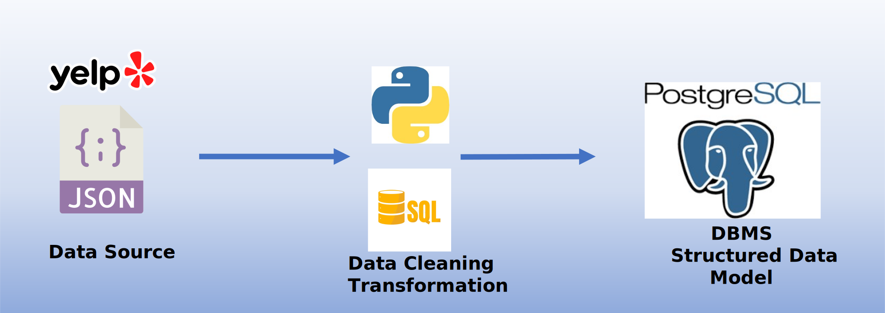
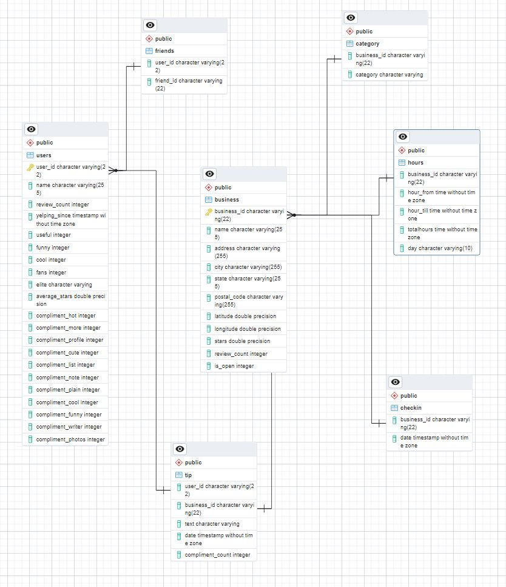
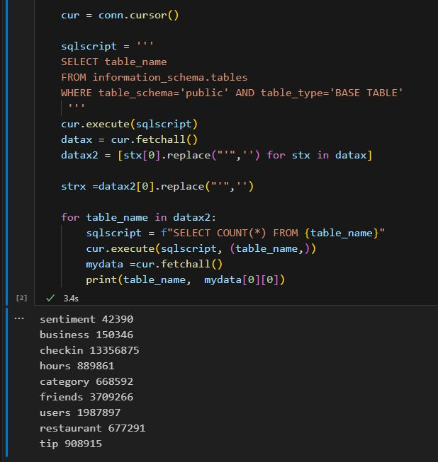

Yelp Open Dataset Transformation
Overview
Yelp is an online platform and mobile app that allows users to discover and review local businesses such as restaurants, hotels, and service providers. It provides a platform for people to share their experiences, rate businesses, and write reviews. Yelp also offers features like business information, photos, menus, and user-generated content to help users make informed decisions about where to go or what services to use. The platform has a significant influence on businesses, as positive or negative reviews can impact their reputation and success.
This project is about uploading the Yelp Open Dataset to a PostgreSQL database for analysis.
Development Process
Github repository of this project The dataset comprises 5 JSON files, totaling approximately 8.65 GBytes in size. To facilitate searching and analysis, I chose to transform the data using Python and upload it to a PostgreSQL database. However, my version does not include the Photo and Review tables due to their large size.
Business table The Business table has been split into three tables: Business FACT table, Hours DIM table, and Category DIM table. Some businesses have multiple categories, necessitating this division. To simplify handling time formats, the Hours table has been created. Calculating daily hours can be challenging when closing times are set to 0:00 or late night hours like 01:00, resulting in negative differences. Refer to the Python code for the workaround.
User & Friend tables The User and Friend tables remain unchanged, except for the Friends table, which is significantly large, so only a limited number of rows have been uploaded.
Tip table The Tip table serves as a connection between the Business and User tables, containing concise reviews that are ideal for sentiment analysis.
The Python code I developed establishes a connection with the PostgreSQL DBMS, creates the necessary tables, and parses the JSON files, uploading the data row-by-row. On my computer with a locally hosted database, the upload process takes approximately 1-2 hours to complete.
Finally, the database ERD (Entity-Relationship Diagram) is depicted as follows:
This code gets all the table names in the database and performs a COUNT(*) on them. This is the size of the final database:
